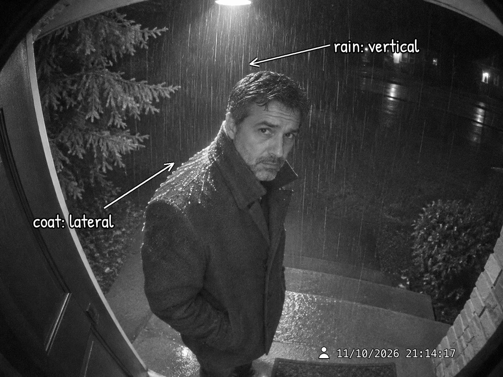

Port Halvard Police Department · Case # PHPD-26-04412
A Detective Maren Holt Thriller by Reena Luiz · a work of fiction
Case file · Reader accessCome in. This file talks about the whole case, so if you're still reading, turn back now, Detective. Everything here is fiction: Port Halvard, its police department and everyone in it are made up.
Before Chapter 31, who did you think killed Heather Whitlock? Pick one and hear what Port Halvard thinks of your theory.
You said: Graham Whitlock
Lieutenant Dana Kessler peels a clementine in one long spiral and sets it on the blotter.
"Finally. Someone in this city agrees with me." She eats a segment. "Four million dollars in April. A girlfriend in May. A lie about dinner. A man who doesn't answer his phone the night a second woman dies. I don't need a drone to tell me what that adds up to. Nine times out of ten it's the husband, and the tenth time it's also the husband, he just had a better lawyer." She wipes her fingers on a napkin. "Of course, Holt thinks I'm wrong. Holt usually thinks I'm wrong."
You said: Danny Keogh
Detective Rick Haugen leans back in his desk chair until it creaks.
"The brother? Yeah, I went there too. Broke, owes her thirty grand, on her porch in the window, pawns her watch the next morning." He shakes his head. "But I sat across from him twice. Kid's a mess. A mess isn't a murderer. A mess bangs on the front door and yells so the whole street can hear. Whoever did this went up the back stairs in the dark without touching the rail, and then sat down two hours later and did something careful with a computer." He holds out a bag of cough drops. "Honey lemon? I hate those."
You said: Kristin Lyle
Sarada Nair doesn't look up from the jigsaw. She's holding a piece of gray sky.
"Okay." A long pause. "Okay. Now prove it, because Maren's going to have to." She tries the piece in the corner. It doesn't fit. "Her watch says she was asleep. She cried in front of two detectives, a barista and a Newfoundland. I'm not saying you're wrong. I'm saying a feeling isn't a file. If you want to say that name in a courtroom, you'd better have something you can hand a jury." She tries the piece again, turned around. "Something on paper, maybe. Maren likes paper."
You said: Graham, and he hired the forger
Rick Haugen sits up so fast his chair rolls into the next desk.
"That's my theory! Nobody listens to me." He grabs his notebook and finds the page with PARDON written on it in a box. "Fake video of yourself, with a flaw in it, so somebody finds the flaw and you walk out of jail a victim. He's in the fake video business!" He lowers his voice. "I told Maren this in a bar. She said something about my ex-wife." He settles back down. "Look, I might be wrong. I've been wrong all week. But I'm glad somebody's on my side. Want a cough drop? Not the honey lemon."
You said: Someone you haven't met
Walt Holt is having a good day. He folds his newspaper and leans in.
"Could be." He holds up one big finger. "But I'll tell you what I told every young detective I ever had. Usually it's the one who brought a casserole. The one at the funeral who cried the hardest and stayed the longest." He sits back, satisfied. "Doesn't mean it's them. Means you go and look. You go stand where it happened. Film's easy to fake. Shoe leather isn't."
Now make it official. Your vote is counted with every other reader's.
Cast your voteLt. Kessler's office is keeping score. Results go up once enough readers have voted. Real numbers only.
At 9:14 p.m. on Tuesday, November 10, two cameras on Kettle Point were recording the Whitlock house.

One of the fourteen exhibits in the book's Case File is a forgery, and nobody in Port Halvard ever notices it. The clues are all in the book. If you've spotted it, you're sharper than the whole department.
Don't post the answer anywhere public; let other readers find it.
Readers who find the hidden fake get their name in this file. No prizes, just the honor.
Found it? Tell us which exhibit and what gave it away. Your answer stays private; only your name (if you say yes) goes on the list.
Submit to the Hall of FameNo names yet. Be the first.